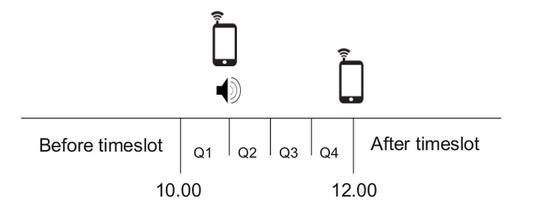

The aim of our product is to help people to remember taking their medication
Enabling them to stay at home longer
Remind the patient
The machine will remind the patient to take the medicine in their home using a human like voice to inform them about their medicine. A message is also sent to their mobile phone.
Inform supporting community
Supporting community, for example a doughter of the patient, will be informed with mobile if medication is forgotter. The family member have the possible to call the patient asking if everything is ok.
Feedback to medical staff
The interaction with the machine is continuously logged to a webserver to enable medical staff to evaluate the patients interaction with the machine. This could be used in evaluating the condition of the patients ability to stay at home.
Encurage usage through gamification and temper
To stimulate interaction with the machine, points are given when medicin is taken at the right time. This is further stimulated by positiv sounds when used correctly. The machine has a temper to modify a human companion. The machine can remind the patient in short sentenses or use the patients name followed by please if the mood is right. The mood if changed depending on if the medicine has previosly been taken in time.
Assignment1

- Before timeslot - No medicine can be accessed
- Q1 - Nothing happens and the patient is given the chance to take the medicine without any notification from the machine. More points are awarded if this happens
- G2 - A notification is sent to the patients mobile and the speaker reminds him/her to take the medication
- Q3 - Q4 simple keeps reminding the patient to take the medication
- After timeslot - A notification is sent to relatives/supporting comminity of the patient
Assignment2
We are going to redesign our approach by making the pill despencer virtual, portable and context aware. The maskin we build in previous is a non poprtable soulution with less connection to context avareness.
Here we will solve the same problem(assist a person in taking his medication) with basically the same software except replacing the fysical machine with a portable object detecting webcam that informs the user what pills to take.
Te pill despenser will inform the patient - when to take his medication (solved by saftware in assignment 1)
- what pill cans to use (replacing the physical maching from assignment 1 with webcam and object detection)
Feedback to the user will be in form of portable projector or text-to-speech(solved in assignment 1) Communication to the system will be by moving pill cans(object detection) or speech-to-text detection